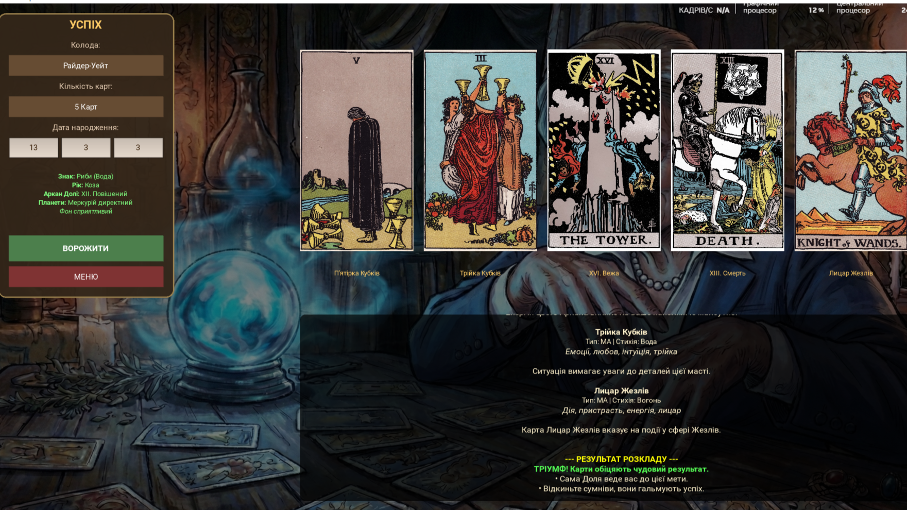

Arcana Oracle
Системные требования:
ОС: Windows 10 / 11
Интернет: Нужен 1 раз (для загрузки библиотек)
Запуск: Автоматический через .bat
О приложении:
Arcana Oracle — это уникальное сочетание древних эзотерических знаний и современной мощи языка Python. Приложение отличается невероятно качественным визуальным стилем благодаря фреймворку Kivy.
В основе программы лежит сложная вычислительная формула. Результат гадания — это не случайность, а математический расчет, учитывающий фазу Луны, год Китайского календаря, сочетание карточных мастей и Старших Арканов. Всё, что нужно — ввести дату рождения.
Ключевые возможности:
-
🔮
4 Сферы Судьбы: Выбирайте один из 4 сегментов Семья, Финансы, Любовь и Успех для гадания. Сложная формула учитывает фазу Луны, год Китайского календаря и нумерологию.
-
🃏
Гибкие расклады: Выбор количества карт: от 1 до 5. Молниеносный расчет результата без задержек.
-
🎨
3 Легендарные Колоды: В приложение встроены самые авторитетные системы: Райдер-Уейт, Марсельское Таро и Таро Тота. Переключайтесь между ними в один клик.
-
⚙️
Умный Запуск: Start.bat автоматически создаст виртуальное окружение и подготовит библиотеки. Безопасно для системы.
Визуальный стиль и Колоды:
🔜 Roadmap (Планы развития):
- 🔹 Расширение раскладов: Увеличение количества карт в раскладе до 8.
- 🔹 Глубокий анализ: Расширенное описание к сферам и усложненная логика подсчета ответов.
- 🔹 Нумерология Имени: Семантический анализ имени (по первой букве и количеству букв) для уточнения прогноза.
- 🔹 Астро-модуль: Внедрение планетной составляющей в формулу расчета и отображение её в отчете.
- 🔹 Синхронизация с Луной: Смена рисунка Луны в интерфейсе в зависимости от реальной фазы на небе.
- 🔹 Атмосфера: Озвучка базовых фраз и голосовое сопровождение выпадения Высших Арканов.
- 🔹 Кастомизация: Возможность выбора разных фонов приложения.
- 🔹 UX улучшения: Более понятные подписи с использованием эмодзи.
*В далеком будущем также планируется введение Premium-функционала.
Как установить:
- Скачайте и распакуйте архив.
- Найдите файл start.bat и запустите его.
- Дождитесь окончания установки библиотек (черное окно консоли). Это нужно только при первом запуске.
- Приложение откроется автоматически. Приятного гадания!
Интерфейс:
